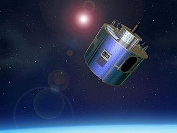

Les satellites en orbite
Des milliers de satellites, de type et de tailles variés, ont été envoyés dans l'espace depuis Spoutnik1 en 1957.
La plupart sont placé en orbite terrestre basse, entre 200 et 2000 km d'altitude.
Ils effectuent une résolution (un tour complet autour de la Terre) en 9O minutes environ.
Prévisions météorologiques
Les satellites offrent une vue très détaillée des systèmes météorologiques.
Leurs informations servent à la prévision météorologique qui, elle , n'est pas toujours précise!

Certains satellites météorologique comme les Météosat de l'agence spacial européenne, occupent une orbite géostationnaire :
positionné à 36000 km d'altitude, ils effectuent une revolution en 24 heures et surplombent donc toujour le même endroit sur Terre.
Ils peuvent ainsi observer les changements de temps.
Les satellites de télécommunications
En 1962, les premiers signaux télévisés étaient transmis en direct entre les Etats Unis et la France.
Les satellites actuels transmettent les émission de centaines de chaines de télévision numérique vers les paraboles (antaine) des particuliers.
Nous pouvons assister aux événement se déroulant partout dans le monde, tandis que les téléphones satellites permentent d'appeler quelqu'un depuis le désert.
Systeme de navigation (GPS)
De nombreux véhicules terrestres et avions sont équipés de système de navigation et de localisation par satellites qui indiquent la route à suivre sur une carte électronique.
Ces systèmes déterminent la position du véhicule grace aux signaux reçus simultanément de quatre satellites.
Les types d'orbite
De nombreux satellites météorologiques et de communication sont positionnés et l'aplob de l'équateur, soit en orbite terrestre basse, soit en orbite géostationnaire, plus loitaine.
Placés en orbite polaire de basse altitude, les satellites peuvent étudier très finement la palnète qui tourne au dessous d'eux.
les satellite d'observation terrestre et les observatoires astronomique se situent sur des orbites inclinées très elliptiques.